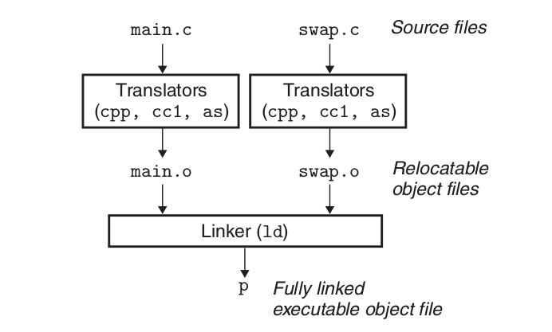
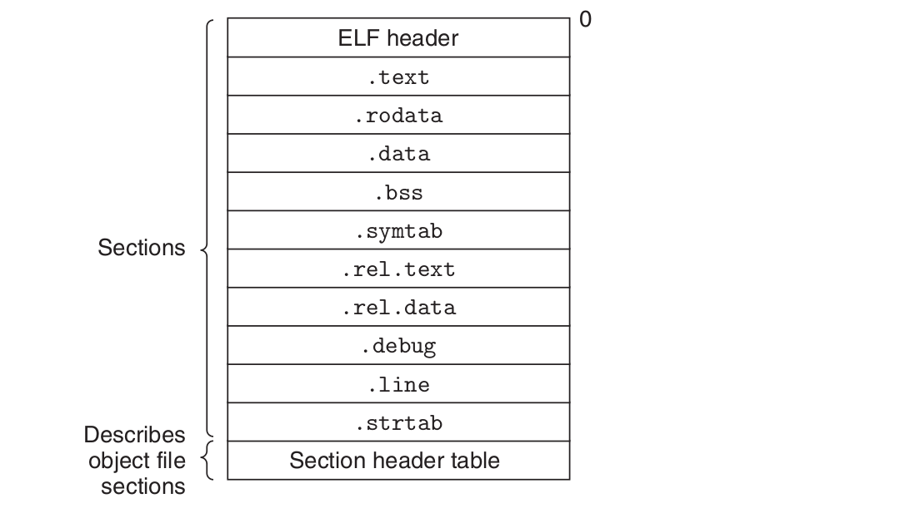
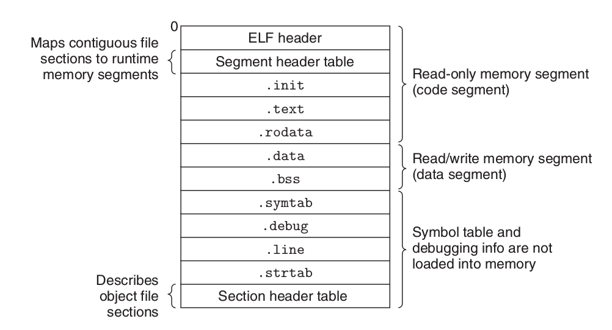

前言
我们知道，开发程序的基本流程是：设计-代码编写-编译-链接-执行
每一个步骤展开都是一个很大的课题，链接是一个被人忽略的课题，因为它并不是很复杂，相对于编译来说它还是比较简单的，但是并不代表它不重要。
现在编译链接的环节基本上由IDE帮助我们完成了，于是我们很少关注编译链接。虽然说不懂编译链接对开发程序并没有很大影响，但是如果要成为大牛，计算机底层的知识还是要掌握的。
编译的知识很多，不是几篇文章能说完的，推荐看《编译原理》。
这篇文章以及几篇相关的文章将参考《深入理解计算机系统》这本书，对链接作一些介绍。
链接的基本概念
链接(linking)就是将不同部分的代码和数据收集和组合成为一个单一文件的过程，这个文件可被加载或拷贝到内存并执行。
简单来说，就是把程序用到的所有源文件的目标文件合成一个可执行目标文件，是一个“多合一”的过程。
链接的执行时机包括：
- 编译时：源代码被翻译为机器码的时候。
- 加载时：程序被加载器加载到内存并执行的时候。
- 运行时：由应用程序执行。
在早期计算机系统中，链接是手动执行的。在现代计算机系统中，链接是由链接器自动执行的。
链接的意义
链接器在软件开发中扮演了关键的角色，它使得分离编译成为可能。我们不用将一个大小的应用程序组织成一个巨大的源文件，而是可以把它分解成为更小的，更好管理的模块，可以独立的修改和编译这些模块，最终由链接器链接成为一个可执行文件。
为什么要学习链接的知识
链接通常是由链接器处理的，不需要我们插手。但是这是在没有错误产生的情况下，一旦错误产生，不理解链接的工作过程和知识，我们就无法排除错误。以下列出学习链接的几个理由：
- 理解链接器将帮助你构造大型程序。构造大型程序的程序员经常会遇到由于缺少模块，库和不兼容库版本引起的链接器错误。除非你理解链接器是如何解析引用，什么是库，以及链接器是如何使用库来解析引用的，否则你无处着手处理错误。
- 理解链接器将帮助你避免一些危险的编程错误。默认情况下，乱用全局变量在链接时是不会产生警告的，这样的错误难以调试。理解链接器将让你知道原因，如何避免。
- 理解链接将帮助你理解语言的作用域规则是如何实现的。
- 理解链接将帮助你理解其他重要的系统概念。
- 理解链接将使你能够开发共享库。
简单的链接过程
来看一个简单的静态链接过程，对链接有一个感性的认识。

源代码经过编译器翻译为汇编语言文件，再经过汇编器翻译为可重定向目标文件，最后由链接器链接为可执行目标文件。
(ccl:C编译器, as:汇编器, ld:链接器)
为了创建可执行文件，链接器要完成两个任务：
- 符号解析。目标文件定义和引用符号。符号解析的目的是将每个符号引用和一个符号定义联系起来。
- 重定位。编译器和汇编器生产从地址零开始的代码和数据节。链接器通过把每个符号定义与一个存储器地址联系起来，然后修改所有对这些符号的引用，使得它们指向这个存储器地址，从而重定位这些节。
目标文件
- 可重定位目标文件。包含二进制代码和数据，其形式可以在编译时与其他可重定位目标文件合并起来，创建一个可执行目标文件。
- 可执行目标文件。包含二进制代码和数据，其形式可以直接被拷贝到内存并执行。
- 共享目标文件。一种特殊类型的可重定位目标文件，可以在加载或运行时，被动态加载到存储器并链接。
可重定位目标文件

- ELF header:前16个字节描述了字的大小和生产该文件系统的字节顺序，剩下的包含帮助链接器解析和解释目标文件的信息。
- .text:已编译程序的机器代码
- .rodata:只读数据
- .data:已初始化的全局C变量
- .bss:未初始化的全局C变量，不占空间
- .symtab:符号表，存放程序中被定义和引用的函数和全局变量的信息。
- .rel.text:一个.text节位置列表，保存跟其他文件链接之后需要修改的项
- .rel.data:记录被模块定义或引用的全局变量的重定位信息
- .debug:调试符号表
- .line:源代码行号和.text节中机器码的映射,用于调试.
- .strtab:一个字符串表包含.symtab和.debug的符号表还有其节头部名.
可执行目标文件

从上图可以看出，可执行目标文件被分为三个部分：
- 代码段:只读内存段
- 数据段:可读写内存段
- 符号表和调试信息:这些数据不会在执行时不会被加载到内存中.